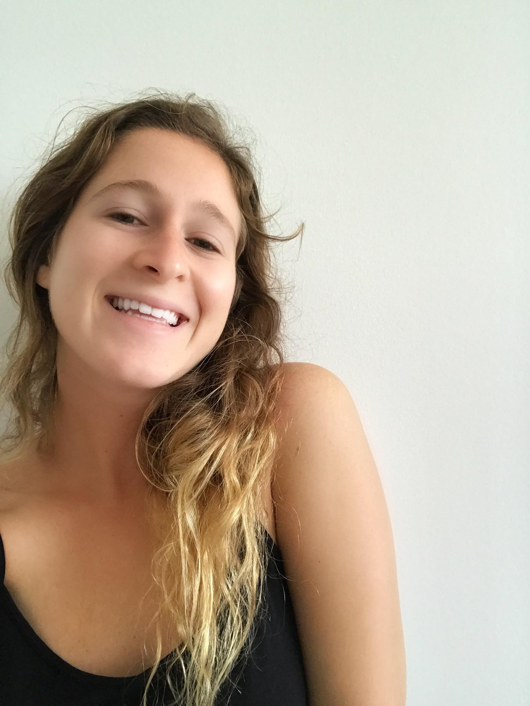

Lily..A high energy, high pitched, and highly productive creative. I’m a spunky girl with a passion for art and design.
 Experience| Hobbies | Description | |
|---|---|---|
| Yoga | From vinyassa to yin, I love it all. | |
| Reading | I usually like a good thriller or non-fiction. | |
| Running | This past year I ran two half marathons, and now I am training for a full | |
| Cooking | I'm not the best chef, but with every meal I make I just keep getting better | |
| Art | Anything creative spikes my interest. I love to create and learn from successes and failurs before me |